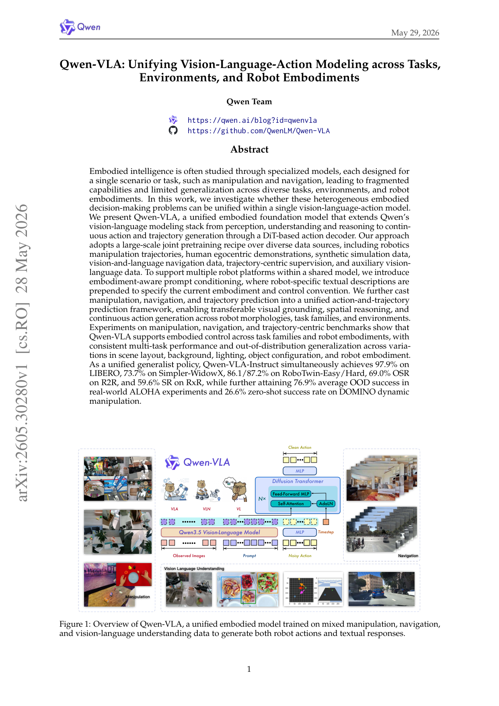

VLAQwen-VLA: Unifying Vision-Language-Action Modeling across Tasks, Environments, and Robot Embodiments
把 Qwen3.5-4B VLM 接一个 1.15B DiT flow-matching action expert,用 embodiment-aware prompt(文本描述本体/控制频率/horizon)统一操控、导航、轨迹预测、人类第一视角动作为同一 action-and-trajectory 预测问题,靠四阶段训练(T2A 纯文本→动作解压缩→CPT 多模态→SFT→RL)解决 VLM 已预训练而 DiT 随机初始化的不对称,一个通用模型跨多本体多任务。